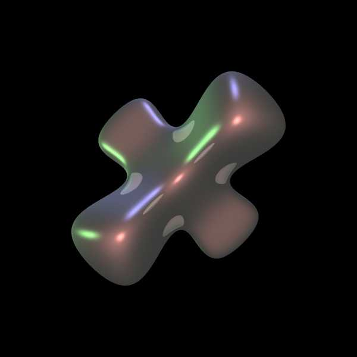
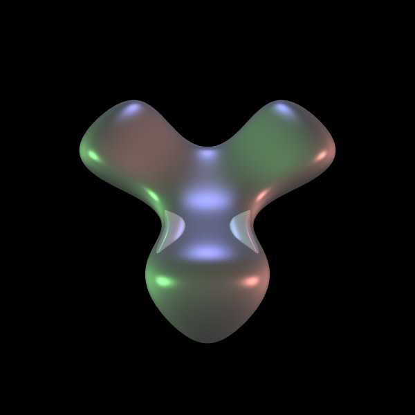

McMullen K3 model
(Dynamics on K3 surfaces)
Graphics by
Paul Bourke
Contributed by Roger Bagula
July 2003
Implicit form
(1 + x
2
) (1 + y
2
) (1 + z
2
) + 8 x y z - 2 = EPSILON
PovRay isosurface model

